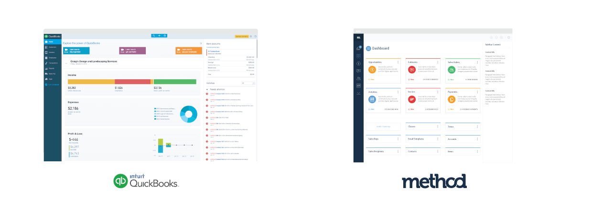

QuickBooks Family

- 1. Mission objectives
- As a successful SaSS company in our domain, we should respect and appreciate what QuickBooks has done.
- 2. Decreasing the barrier of entry
- The same types of business that are attracted to QB are the same that are attracted to Method, and so these companies have a lower barrier of entry to Method because of a lower learning curve in the familiarity between the two platforms.
- 3. Maintaining Method’s identity
- We'd like to make Method more familar to adopt, but we don't want to lose our identity and be confused with it being QuickBooks
- 4. Taking the lead
- There are flows that we like, and things that we can improve on, even if we try to mimic them. We should take what they've done, expand on it, and lead them rather than us follow them.
- 5. Guiding versus helping
- The product leads people instead of helping them figure it out. Method users should learn by doing and because of the explicit way in which method communicates the context of functions. Not with helptips, and popups, or guides.
- 6. Accept limitations, but provide accessiblity
- Users expect balanced limitations. We have technical limitations and roadmap / cost effective limitations. People do expect what they see on desktop to be accessible on mobile. Functional limitations are ok.
- 7. Logical structuring of information
- Proactively being able to attain and assemble information in a structured way that leads to product and design decisions.
{% comment %}
{% assign entries = site.components %}
{% for entry in entries %}
{% include component.html %}
{% endfor %}
{% endcomment %}
{% comment %}
If you want to make sure your types are grouped (file names are not enough), you could use this group_by loop instead
{% assign componentsByType = site.components | group_by:"type" %}
{% for type in componentsByType %}
{{ type.name | capitalize }}
{% for entry in type.items %}
{% include component.html %}
{% endfor %}
{% endfor %}
{% endcomment %}
{% comment %}
If you want to use pages and/or posts to create a more comple styleguide with pages / intros for every type of components, you can use these where loops on those pages / posts instead
{% assign entries = site.components | where:"type","buttons" %}
{% for entry in entries %}
{% include component.html %}
{% endfor %}
{% assign entries = site.components | where:"type","typography" %}
{% for entry in entries %}
{% include component.html %}
{% endfor %}
{% endcomment %}